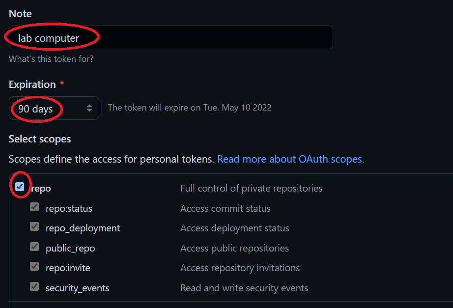
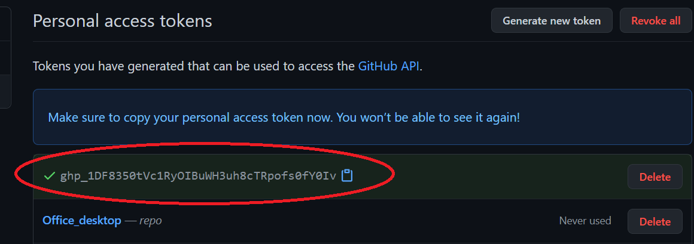

Authenticating with GitHub
Authenticating with GitHubPersonal access token (PAT) based authenticationWindowsMacLinuxSSH based authenticationChecking for existing SSH keysGenerating a new SSH keyAdding the SSH key to the ssh-agent processWindows and LinuxMacAdding SSH key to your GitHub accountCloning a GitHub repo using SSHConverting an existing HTTPS local repo to SSHAvoiding the need to enter a passphraseWindows and LinuxMac
Prior to August 13, 2021, you were allowed to authenticate by typing a username and password every time you pushed or pulled from GitHub. For example, when pushing changes made in a local repo to GitHub, the session would look something like this:
xxxxxxxxxx$ git push> Username for 'https://github.com': jdcolby> Password for 'https://jdcolby@github.com': ******Using your GitHub password is no longer allowed after August 13, 2021. Instead, you need to adopt one of several authentication options. Two of these options are covered here: Personal Access Token (PAT) or SSH-based authentication. Both techniques require some degree of configuration on both your GitHub account and your local machine, but the PAT will be the easiest to set up for your students.
Note that your choice of authentication will be dictated by the way you connect to your GitHub repo. If you use PAT, you will connect to your repo over HTTPS--this is the connection used in this workshop. If you use an SSH key, you will connect to your GitHub repo over SSH.
For example, if jdcolby clones repo1 from her GitHub account using HTTPS, she would type:
xxxxxxxxxx$ git clone https://github.com/jdcolby/repo1.gitIf jdcolby clones that same repo1 repository from her GitHub account using SSH, she would type:
xxxxxxxxxx$ git clone git@github.com:jdcolby/repo1.git
Instructions on setting up authentication using both techniques follow.
Personal access token (PAT) based authentication
First, you need to follow these steps on GitHub:
Click on your avatar (upper right-hand corner) and select Settings.
On the left sidebar, click on Developer settings.
In the left sidebar, click Personal access tokens.
Click Generate new token.
In the Note field, assign a name to this token such as the local computer you are creating this token for.
From the scopes menu, select repo. This will allow you to read/write to your repo.

Click Generate token at the bottom of the page.
Copy and temporarily save the token before closing the window.

When copying the token id, be careful not to add any empty spaces to the beginning or end of the token. It might be a good idea to temporarily paste the token into a plain text editor.
Note that you will not be able to access the token string once you exit the window! You might want to keep this window open until you've completed the steps outlined next.
Once you've created your token on GitHub, you simply substitute your GitHub password with your access token.
xxxxxxxxxx$ git clone https://github.com/jdcolby/repo.gitUsername: jdcolbyPassword: <your token>
When you paste your token, you will not see it displayed on the command line. This might lead you to believe that it did not paste. Do not attempt a re-paste since this will only add the token to the end of the already pasted token.
Pasting your token each time you push or pull from your repo may prove cumbersome after a while. It might therefore be best to cache your token.
Windows
If you are using a Windows based Git application, you might see the following window pop-up when you are first asked to enter your token.

If so, you can paste the token into the Personal Access Token field.
Alternatively, you can add a git setting via the Windows Bash environment as follows:
xxxxxxxxxxgit config --global credential.helper wincredNote that this
configoption only works in the Git for Windows Bash shell. This option will not work in a Windows WSL Ubuntu environment. If you are using WSL Ubuntu, you need to follow the Linux instructions listed below.
The credentials get stored in Windows' Credential Manager. You can delete this stored credential by accessing the Credential Manager via Control Panel >> All Control Panel Items >> Credential Manager or by simply typing Credential Manager in the Windows' task bar.

Mac
You'll need the OSX keychain credential helper. If you installed Git using Homebrew or via the Xcode command line, then osxkeychain helper should be part of the installation.
You can check for its installation via the following command:
xxxxxxxxxx$ git credential-osxkeychainTo have Git store the token in osxkeychain, type:
xxxxxxxxxx$ git config --global credential.helper osxkeychainThe next time you are prompted for a user name and password, simply type your GitHub account name, then your personal access token. This will be a one time operation after which the token will be permanently stored.
Click here to for more information on using Keychain with Git.
Linux
To temporarily cache the token on Linux, use the following command:
xxxxxxxxxx$ git config --global credential.helper cacheNote, however, that the token is only cached for 15 minutes by default. If you want the token to be cached for a longer period of time, add the 'cache --timeout=XX\' option where XX is time in seconds. For example, to cache the token for 24 hours (86,400 seconds), type:
xxxxxxxxxx$ git config --global credential.helper 'cache --timeout=86400'To permanently cache the token on Linux, type: (https://stackoverflow.com/a/12240995):
xxxxxxxxxx$ git config credential.helper storeThe next time you are prompted for your GitHub user name and token, the information will be stored permanently in a .git-credentials file under your home folder. Note, however, that this file is not encrypted. For a more secure permanent solution, you might want to check the SSH based authentication option.
SSH based authentication
NOTE: If you adopt an SSH based approach to authentication, you will need to connect to your repo via
ssh. For example, if userjdcolby's repo name isrepo1, you would connect to it via:
xxxxxxxxxx$ git@github.com:jdcolby/repo1.gitThis differs from the HTTPS option adopted in this workshop:
xxxxxxxxxx$ https://github.com/jdcolby/repo1.git
Checking for existing SSH keys
You might or might not already have public keys under ~/.ssh file.
xxxxxxxxxx$ ls -al ~/.sshIf you do, look for the files ending with .pub. The contents of these public keys are used to link your local repos to your GitHub account. By default, the filenames of the public keys are one of the following: id_ed25519.pub or id_rsa.pub. If these files exist in your ~/.ssh folder, you can jump to the Adding SSH key to your GitHub account section of this tutorial.
Generating a new SSH key
In your Bash shell, type the following (note that the email address should be the one tied to your GitHub account). For example, jdcolby would type the following:
xxxxxxxxxx$ ssh-keygen -t ed25519 -C "jdcolby@my_college.edu"xxxxxxxxxxGenerating public/private ed25519 key pair.Enter file in which to save the key (/home/jdcolby/.ssh/id_ed25519):This creates a new SSH key, using the provided email as a label. Accept the default file location and press the Enter key.
At the prompt, type a secure passphrase. This passphrase will be used instead of your password when performing a Git/GitHub transaction from your computer, so don't forget it!
xxxxxxxxxx> Enter passphrase (empty for no passphrase): [Type a passphrase]> Enter same passphrase again: [Type passphrase again]You will then see an output similar to this:
xxxxxxxxxxYour identification has been saved in /home/jdcolby/.ssh/id_ed25519Your public key has been saved in /home/jdcolby/.ssh/id_ed25519.pubThe key fingerprint is:SHA256:AuErG+8I8YUkRbNn1iNiGB/T3P6p4oWtmHA821i3bPO jdcolby@my_college.eduThe key's randomart image is:+--[ED25519 256]--+| ..o.o ||.o . o o o ||o O o . o . . ||.* * o . . . o ||*++ + . S . E ||**oo . . . ||*++. . o ||o=o. . .o. ||+o. ..o.. |+----[SHA256]-----+
Adding the SSH key to the ssh-agent process
Next, you need to add the previously generated key to a process called ssh-agent.
Windows and Linux
xxxxxxxxxx$ eval "$(ssh-agent -s)"$ ssh-add ~/.ssh/id_ed25519You'll then be prompted to enter the passphrase used in the earlier step.
xxxxxxxxxxEnter passphrase for /home/jdcolby/.ssh/id_ed25519:Identity added: /home/jdcolby/.ssh/id_ed25519 (jdcolby@my_college.edu)
Mac
xxxxxxxxxx$ eval "$(ssh-agent -s)"Edit (or create it if non-existent) the ~/.ssh/config file by adding the following lines of code.
xxxxxxxxxxHost *AddKeysToAgent yesUseKeychain yesIdentityFile ~/.ssh/id_ed25519
Next, add the key to the ssh-agent. Note the use of the -K option.
xxxxxxxxxx$ ssh-add -K ~/.ssh/id_ed25519Adding SSH key to your GitHub account
Now that you've completed the step on your computer, you will will switch to your GitHub account. But before you do, you will need to copy the SSH public key generated on the previous step to your clipboard.
In ~\.ssh you should see a file ending with .pub such as id_ed25519.pub. This is the public key generated earlier in this tutorial that you will share with your GitHub account.
Open the contents of the ~/.ssh/id_ed25519.pub file in your home folder.
xxxxxxxxxx$ cat ~/.ssh/id_ed25519.pubCopy its contents. It should start with ssh-ed5519 ... and end with your email address.
- On GitHub, click on your avatar, then select Settings.
- On the left sidebar, click on SSH and GPG keys.
- Click on New SSH key.
- Assign a Title for this key (this is only used for your reference but is should be descriptive enough for you to know which client computer it is referencing).
- Paste the key from the
.ssh/id_ed25519.pubfile in the Key field (be careful not to add empty spaces). - Click Add SSH key. You might be prompted to type your GitHub password.
Next, you can test your connection from your Bash environment.
In Bash, type the following (do not substitute the git@github.com address).
xxxxxxxxxx $ ssh -T git@github.comYou might see the following warning (including the public key as shown below):
xxxxxxxxxxThe authenticity of host 'github.com (140.82.114.3)' can't be established.RSA key fingerprint is SHA256:nThbg6kXUpJWGl7E1IGOCspRomTxdCARLviKw6E5SY8.Are you sure you want to continue connecting (yes/no/[fingerprint])?Type yes to continue.
The next warning should list your account name (e.g. jdcolby in this working example).
xxxxxxxxxxWarning: Permanently added 'github.com' (RSA) to the list of known hosts.Hi jdcolby! You've successfully authenticated, but GitHub does not provide shell access.
Cloning a GitHub repo using SSH
At this point, you should be all set. As mentioned at the beginning of this page, when using SSH to connect to your GitHub repo, you need to use the SSH protocol. For example, to clone repo1, you would type:
xxxxxxxxxx$ git clone git@github.com:jdcolby/repo1.gitYou might be prompted for the passphrase that was used in an earlier step when you created the SSH key.
Converting an existing HTTPS local repo to SSH
If you've already cloned a repo using HTTPS on your local computer, you will need to make a few changes to your local repo before benefitting from the SSH system.
First, check that you are indeed using HTTPS:
xxxxxxxxxx$ git remote -vxxxxxxxxxxorigin https://github.com/jdcolby/repo1.git (fetch)origin https://github.com/jdcolby/repo1.git (push)
To change from a HTTPS URL to a SSH URL, type:
xxxxxxxxxx$ git remote set-url origin git@github.com:jdcolby/repo1.gitAvoiding the need to enter a passphrase
If you do not wish to type your passphrase every time you perform a Git/GitHub transaction you can try one of the suggested methods below for your OS.
Windows and Linux
You need to instruct Bash to launch ssh-agent every time you start a new Bash session. One approach is to edit (or create if non existent) ~/.bashrc by adding the following lines:
xxxxxxxxxxenv=~/.ssh/agent.envagent_load_env () { test -f "$env" && . "$env" >| /dev/null ; }agent_start () { (umask 077; ssh-agent >| "$env") . "$env" >| /dev/null ; }agent_load_env# agent_run_state: 0=agent running w/ key; 1=agent w/o key; 2= agent not runningagent_run_state=$(ssh-add -l >| /dev/null 2>&1; echo $?)if [ ! "$SSH_AUTH_SOCK" ] || [ $agent_run_state = 2 ]; then agent_start ssh-addelif [ "$SSH_AUTH_SOCK" ] && [ $agent_run_state = 1 ]; then ssh-addfiunset envOnce saved, every time you fire up a new Windows Bash session, you'll be prompted for this passphrase at the beginning of the session at which point you will no longer be requested to enter the passphrase.
Mac
On most recent versions of Mac you will probably be prompted to save the passphrase to your Mac keychain, if not, you can add the following lines to your ~/.ssh/config file:
xxxxxxxxxxHost * AddKeysToAgent yes UseKeychain yes IdentityFile ~/.ssh/id_ed25519
 Manny Gimond (2021)
Manny Gimond (2021)